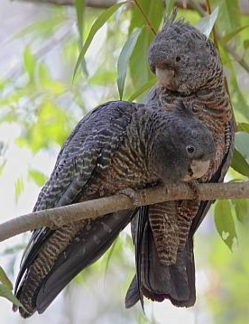

The Gang-Gang Bird
The Gang-gang is a small cockatoo of 34-35 cm. They have a crest, large, wide wings and a short tail. The adult male has a red head and crest. The rest of its body is dark grey. The adult female has a dark grey head and crest. The feathers of the belly are slightly yellow and pink. In both the male and female, the feathers of the upper parts and wings are edged pale-grey. Females have yellow edging to their feathers. Young birds are similar to adult females, but young males have a red crown and forehead and a short, red crest. Gang-gangs are gregarious but relatively quiet cockatoos.

A male Gang-Gang Cockatoo
A female Gang-Gang Cockatoo